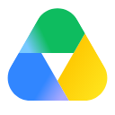

Respostas com fontes para conferir.
Reúna os documentos que a equipe consulta no dia a dia. Você escolhe onde buscar a cada conversa.

Três passos para encontrar o que você precisa.
Envie arquivos ou conecte o Google Drive e o Confluence em Fontes de conhecimento.
Descreva o que precisa saber. Use o seletor junto à mensagem para consultar todas as fontes ou apenas algumas.
Clique nos números da resposta para ler o trecho usado. Quando disponível, abra também o documento original.